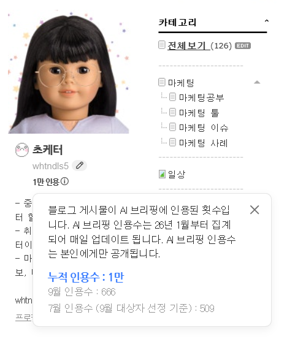
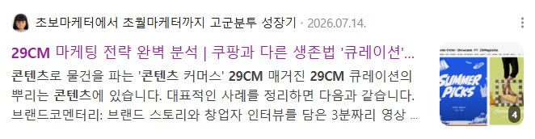

참여 범위
- 개인 프로젝트 — 기획 · 집필 · 구조 실험 · 지표 추적 모두 본인 단독
- 채널: 네이버 블로그 「초보마케터에서 초월마케터까지 고군분투 성장기」 (blog.naver.com/whtndls5)
- 규모: 글 126개 (2026.09 기준) · 카테고리: 마케팅 공부 · 마케팅 툴 · 마케팅 이슈 · 마케팅 사례
배경과 문제
검색 결과 상단을 생성형 AI 요약(네이버 AI 브리핑 등)이 차지하면서, "몇 위에 노출되는가"보다 "AI가 답의 출처로 내 글을 고르는가"가 유입을 좌우하게 되었습니다.
실무에 적용하기 전에, 개인 채널에서 AI 검색 최적화(AEO/GEO)가 실제로 작동하는지 직접 확인하고 싶었습니다.
목표
- 지표: 네이버 AI 브리핑 인용수 (블로그 프로필에서 확인되는 값)
- 시작 시점 기준값: 0 (2026.01 집계 시작)
- 목표 설정 이유: 조회수는 노출 위치에 좌우되지만, 인용수는 "AI가 답으로 채택한 횟수"라 콘텐츠 구조의 효과를 더 직접적으로 보여줍니다.
타깃과 인사이트
인용되는 글은 잘 쓴 글보다 질문에 바로 답하는 구조의 글이었습니다. 정의 → 답 → 근거 → 예시 순서가 인용에 유리했습니다.
인용 상위 글은 대부분 실제 브랜드 · 유통 사례를 마케팅 관점으로 풀어 쓴 글이었습니다. 예: 29CM 마케팅 전략 분석 — 쿠팡과 다른 생존법 ‘큐레이션’ (네이버 검색 상위 노출), 올리브영 PB의 네이버쇼핑 퇴점 살펴보기, 동대문 창신동 문구거리 방문기 — 촉감과 무해함의 경제학
전략
- 마케터가 실제로 검색하는 질문을 제목으로 두고, 첫 문단에서 답을 끝내는 구조를 기본 템플릿으로 삼았습니다.
- 한 글에 한 질문만 다루고, 용어 정의와 숫자를 문장 단위로 분리해 AI가 인용하기 쉬운 단위로 썼습니다.
실행
- 마케팅 · AI 주제로 꾸준히 발행하며 글 구조를 바꿔 인용 반응을 비교
- 인용수 추이를 월 단위로 확인해 인용이 많은 글의 공통 구조를 다음 글에 반영
성과
- AI 브리핑 인용 누적 10,000회2026.01 ~ 2026.09 (약 8개월) · 네이버 블로그 프로필 지표 (본인 계정에서만 확인 가능, 아래 캡처)
- 월 인용 500 ~ 600회대 유지7월 509회 · 9월 666회 (9월은 18일 기준 집계 중)


관련 링크
외부 링크는 새 창에서 열립니다.